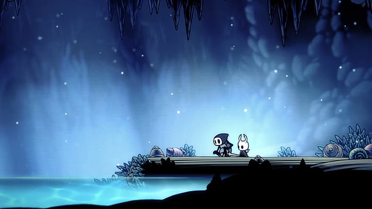

Hollow Knight
"Hollow Knight" es un metroidvania excepcional que destaca por su hermoso arte en 2D y su atmósfera envolvente. La exploración en Hallownest es gratificante, con un mundo interconectado lleno de secretos y desafíos. La jugabilidad es fluida, y el combate, aunque desafiante, recompensa a los jugadores hábiles. Sin embargo, su dificultad puede ser desalentadora para algunos, y la falta de una narrativa directa puede dejar a los jugadores un poco perdidos en la historia. Aun así, su diseño de niveles y la profundidad del lore lo convierten en un clásico moderno..
Brawlhalla

"Brawlhalla" es un juego de lucha en 2D que se siente accesible y entretenido. Su estilo de arte es vibrante, y el sistema de combate es intuitivo, lo que lo hace ideal tanto para jugadores casuales como para competitivos. La amplia variedad de personajes y modos de juego mantiene el interés. Sin embargo, la monetización, aunque no es intrusiva, puede desanimar a algunos jugadores que no quieran pagar por personajes adicionales. En general, es un excelente juego para jugar con amigos, aunque su profundidad competitiva puede no ser tan rica como la de otros títulos del género.
Destiny 2

"Destiny 2" ha evolucionado enormemente desde su lanzamiento, ofreciendo una experiencia de disparos en primera persona con elementos de RPG y MMO. La jugabilidad es suave y la estética es impresionante. Sin embargo, la narrativa puede ser confusa y está fragmentada a través de expansiones y eventos, lo que puede alienar a los nuevos jugadores. El modelo de servicio en vivo tiene sus pros y contras, ofreciendo contenido constante pero también desafiando la paciencia de los jugadores con el grind. A pesar de sus problemas, la comunidad y el diseño del mundo son sus mayores fortalezas.
The last of us

"The Last of Us" es una obra maestra en narrativa y desarrollo de personajes. La historia es intensa y emocional, llevándonos a un mundo postapocalíptico donde la humanidad enfrenta su propia oscuridad. La jugabilidad combina sigilo y combate, creando momentos de tensión que son impactantes. Aunque algunos critican la IA de los enemigos y ciertos elementos de juego, el enfoque en la narrativa y las actuaciones sobresalientes, especialmente de Troy Baker y Ashley Johnson, hacen que la experiencia sea inolvidable. Es un juego que se siente más como una película interactiva que un videojuego tradicional.